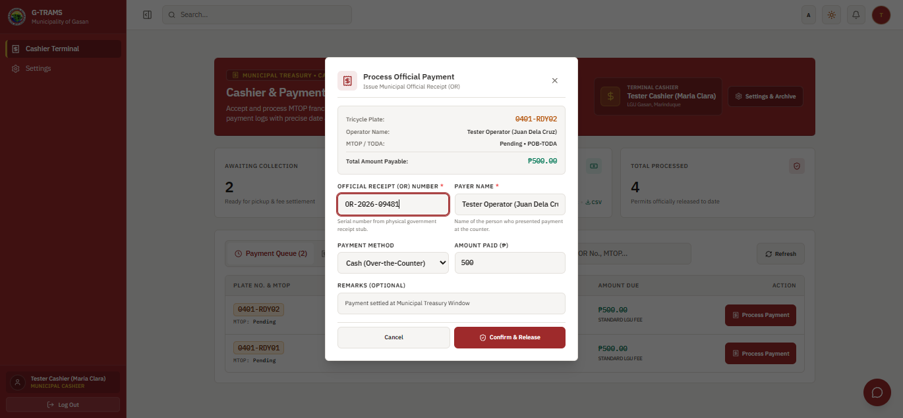

G-TRAMS2026 / USER’S MANUAL
SECTIONS 8 & 9 | CASHIER QUICK GUIDE
SECURITY & SUPPORT
8. Security at User Reminders
1. Panatilihing pribado ang password. Gumamit lamang ng sariling authorized account.
2. Piliin ang Log Out pagkatapos gamitin. Isara ang browser at huwag i-save ang password sa public device.
3. Protektahan ang personal data alinsunod sa Data Privacy Act of 2012 (R.A. 10173). Magbahagi lamang sa authorized personnel para sa kinakailangang trabaho.
4. Mag-upload ng tunay at malinaw na dokumento. Gumamit ng sample accounts o redacted screenshots sa reports at presentations.
5.4 Municipal Treasury / Cashier - Payment Collection
Layunin: itala ang assessed payment at Official Receipt.
1. Sa Cashier Terminal, hanapin ang operator o plate number at piliin ang Process Payment.
2. Suriin ang assessment. Ilagay ang O.R. Number, payor name, payment method, at amount paid.
3. I-review ang entries at piliin ang Confirm & Release. Suriin ang saved payment record.
Resulta: maitatala ang bayad at maa-update ang request status. Sundin ang Treasury assessment para sa ₱500 franchise fee o ₱50 cancellation fee.

Figure 13. Municipal Cashier - Process Official Payment and O.R. entry.
9. Support at Contact Channels
SB / Office of the Municipal Vice Mayor: Municipal Building, Gasan, Marinduque - para sa requirements, franchise status, corrections, at cancellation.
Municipal Treasury / Cashier: Municipal Building, Gasan - para sa assessment, payment, at O.R. concerns.
MarSU CICS / G-TRAMS project team: Marinduque State University, Boac, Marinduque.
College email: cics@mscmarinduque.edu.ph
Sa paghingi ng tulong, ihanda ang role, reference number, petsa/oras, eksaktong error, at redacted screenshot. Huwag isama ang password.